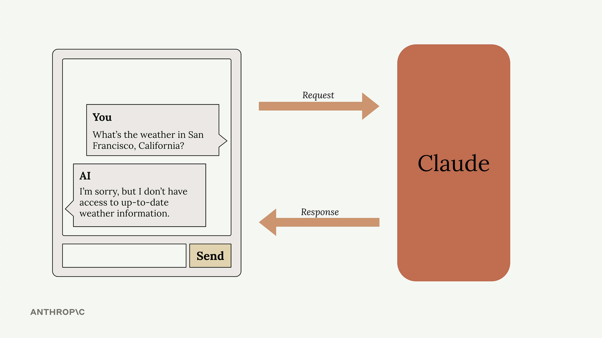
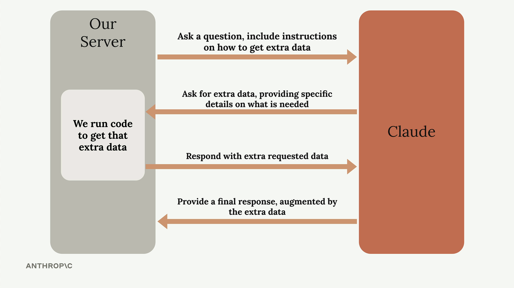
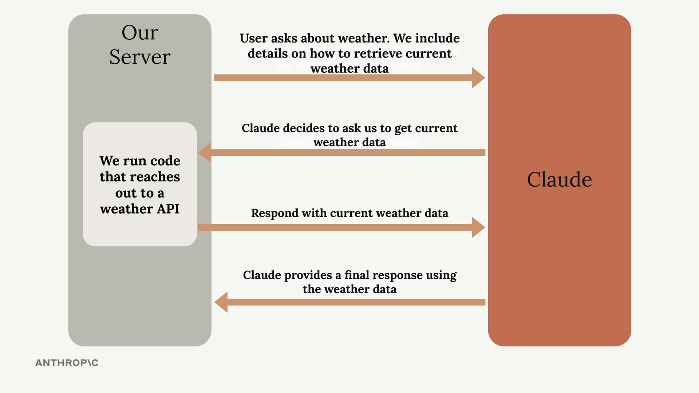

Введение в tool use
Чему научитесь
Видео 2:54 и текст урока
К концу урока вы сможете:
- объяснить, зачем Claude нужны инструменты;
- описать четыре шага обмена сообщениями при tool use;
- назвать, какие задачи решает tool use.
Видео и текст урока.
Смотреть урок на Skilljar Introducing tool use · 2:54Инструменты (tools) дают Claude доступ к информации из внешнего мира и расширяют его возможности за пределы того, чему он научился при обучении. По умолчанию Claude знает только то, что было в его обучающих данных, и не имеет доступа к текущим событиям, данным в реальном времени или внешним системам. Tool use решает это ограничение: появляется структурированный способ, которым Claude запрашивает и получает свежую информацию.
Проблема без инструментов
Когда пользователь просит у Claude актуальную информацию, тот упирается в стену. Например, на вопрос «What's the weather in San Francisco, California?» Claude приходится ответить что-то вроде «I'm sorry, but I don't have access to up-to-date weather information.»

Пользователю это неудобно: ему нужны данные в реальном времени, с которыми Claude мог бы помочь, будь у него доступ к актуальной информации.
Как работает tool use
Tool use идёт по определённой схеме обмена сообщениями между вашим приложением и Claude. Полный цикл такой:

- Первый запрос: вы отправляете Claude вопрос вместе с инструкциями, как получить дополнительные данные из внешних источников;
- Запрос инструмента: Claude анализирует вопрос, решает, что ему нужна дополнительная информация, и уточняет, какие именно данные ему нужны;
- Получение данных: ваш сервер выполняет код и получает запрошенную информацию из внешних API или баз данных;
- Итоговый ответ: вы отправляете полученные данные обратно Claude, и он составляет полный ответ, опираясь и на исходный вопрос, и на свежие данные.
Пример с погодой
Посмотрим, как это работает с вопросом о погоде. Процесс становится конкретнее:

Когда пользователь спрашивает о текущей погоде, вы добавляете в промпт инструкции, как получить данные о погоде. Claude понимает, что ему нужна актуальная информация, и запрашивает погоду для конкретного места. Ваш сервер обращается к API погоды за текущими условиями и отправляет данные обратно Claude. Наконец, Claude объединяет свежие данные о погоде с вопросом пользователя и даёт точный актуальный ответ.
Главные преимущества
- Информация в реальном времени: доступ к данным, которых не было при обучении Claude;
- Интеграция с внешними системами: подключение Claude к базам данных, API и другим сервисам;
- Динамические ответы: ответы на основе самой свежей информации;
- Структурированное взаимодействие: Claude точно знает, какая информация ему нужна и как её запросить.
Tool use превращает Claude из статичной базы знаний в динамичного ассистента, который работает с живыми данными. Это открывает дорогу приложениям, которым нужна актуальная информация, — будь то погода, котировки акций, запросы к базе данных или любые другие данные в реальном времени.
Дальше
Дальше — обзор учебного проекта: Claude будет ставить напоминания, а для этого ему понадобятся три инструмента.
Оригинал урока: Introducing tool use.